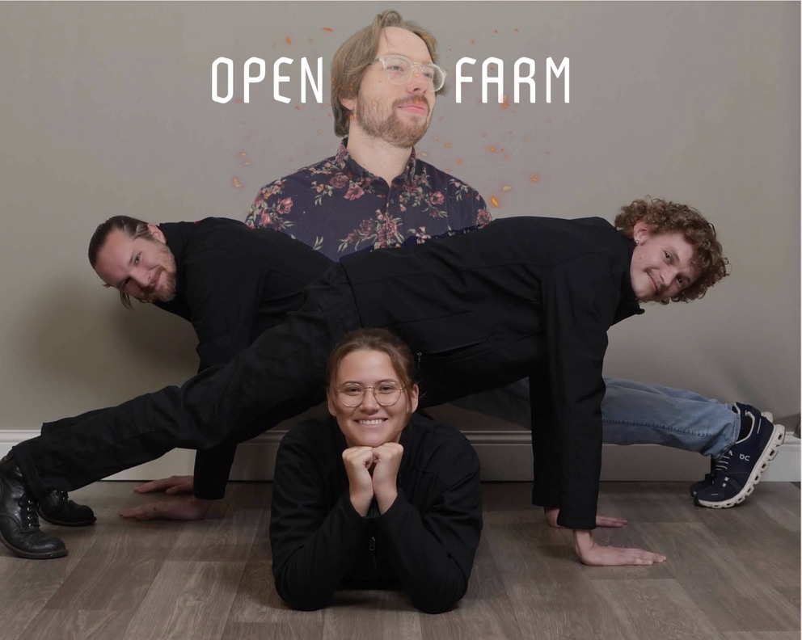
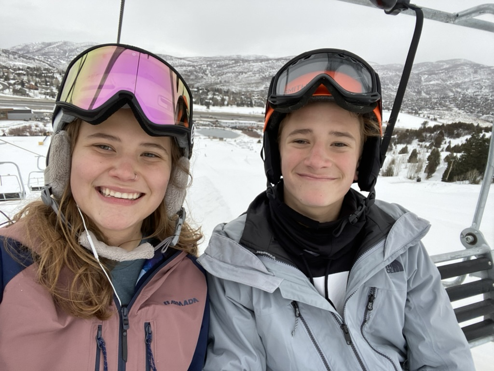
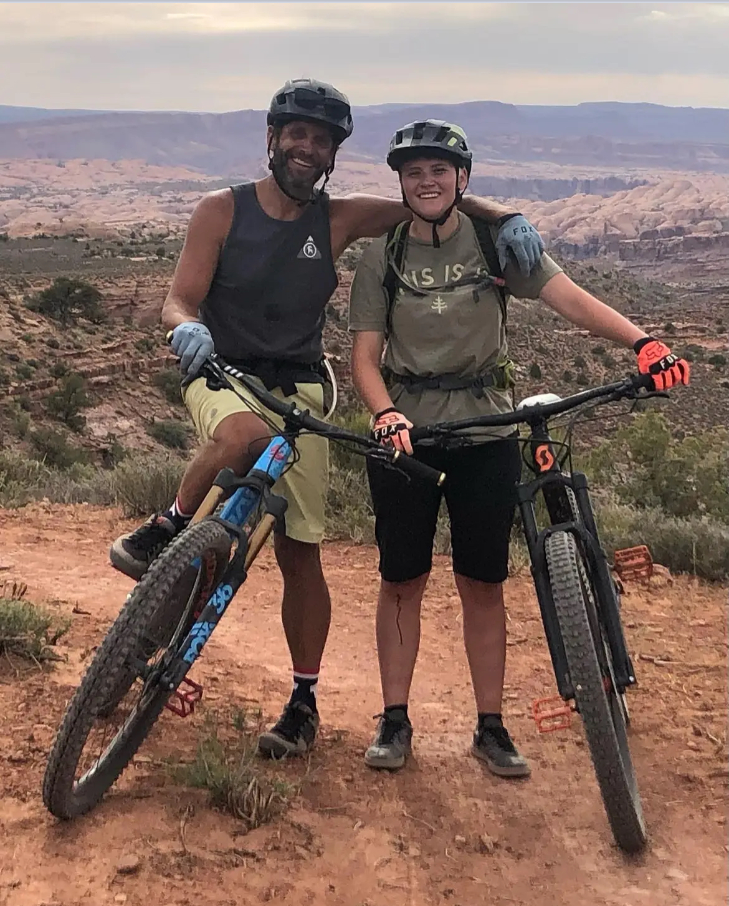
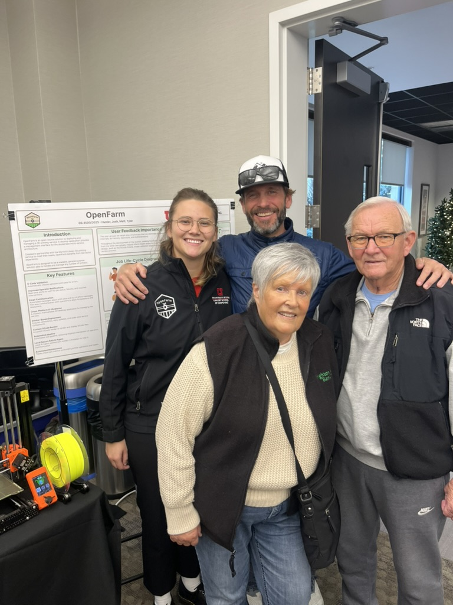

I am currently conducting HCI research with a PhD student Janet Ikhile under Professor Vineet Pandey
at the University of Utah. We are studying how physical and occupational therapists who work with neurological and
movement disorders assess patients, personalize rehabilitation, and use
digital tools in practice. Our goal is to identify opportunities for
technology to better support upper-extremity assessment, therapy planning,
and progress tracking.
I am an incoming master's student in Human-Centered Computing at the
University of Utah, with a bachelor's degree in Computer Science and a
minor in Business.
I am interested in how technology can better support people in real-world
settings. My work combines user research, interaction design, accessibility,
and software development to create tools that are useful, understandable,
and grounded in the needs of the people who use them.
My background in computer science allows me to move between research,
prototyping, and implementation. I especially enjoy translating observations
from interviews and usability studies into interface ideas, then building
those ideas into working products.
Outside of school and research, I enjoy reading fantasy literature and spending time outdoors whether that be skiing, camping, rock climbing
or mountain biking.
Graduation day!

The OpenFarm team at JC Penny photoshoot

On the slopes with my brother

On the trail with my dadExploring Switzerland

Presenting OpenFarm with family
Chapter II: Projects
2
Adventures in Code
❧
A collection of magical quests and challenges overcome...
OpenFarm
C#, Avalonia, PostgreSQL, RabbitMQ, Docker • Jan 2025–Present
✦ Co-founded and led UI/UX & desktop architecture for a scalable 3D print-farm platform.
✦ Click below to go through the details of my favorite project!
Kotlin, Jetpack Compose, Firebase • September - December 2024
✦ Implemented secure user authentication with Firebase, enabling email/password login, user sign-ups, and persistent session management.
✦ Developed functionality for storing and retrieving user-specific drawings locally, with options to upload for public sharing or save shared drawings for personal use.
✦ Integrated Firebase Realtime Database to enable seamless collaboration, allowing users to browse, view, and interact with drawings uploaded by others.
✦ Designed an intuitive interface with Jetpack Compose, optimizing usability for switching between personal and shared content tabs.
Project Demonstrations
View the enchanted scrolls (videos) to witness the app in action:
✦ Collaborated in a team of four to develop an interactive tutorial application, teaching graph transformations and fractal generation through an engaging tutorial and sandbox mode.
✦ Developed backend functionality for the tutorial mode and sandbox, enabling users to explore and manipulate parameters like x, y, and z to experiment with Barnsley Fern and fractal visualizations.
✦ Designed and implemented a role-based user interface, dynamically displaying content and functionality based on user roles (e.g., admin, student) through seamless integration of C# and SQL.
✦ Enhanced database security by implementing input serialization in C#, mitigating SQL injection vulnerabilities, and improving overall system resilience.
Chapter III: Experience
3
A Record of the Journey
Experience connecting research, design, technology, and reliable operations
across product, aviation, and supply-chain environments.
UX
Local Grown Salads
UX Designer Intern
Dec 2025 – Feb 2026Toronto, Canada · Remote
Translated five Figma files into a working Apache Superset dashboard prototype, carrying design intent through implementation.
Built 10 charts, reusable CSS and JavaScript styling templates, and interface filters to support faster, more consistent dashboard iteration.
Coordinated reviews across three teams, reconciled feedback, and refined workflows to align UX decisions with shared product goals.
Identified and corrected more than 25 critical load discrepancies across 1,000+ flights, supporting regulatory compliance and safe weight-and-balance operations.
Onboarded and coached three planners, with attention to the usability and accessibility of day-to-day operational tools.
Validated government contracts and supply-chain data, identifying and resolving defects that could affect downstream system performance and compliance.
Worked across functions to verify data quality and support accurate, reliable handoffs between teams.
Data QualityComplianceSupply ChainCross-Functional Work
Independent Practice · Early Stage
Studio Peters
SP
Studio Peters is an independent design practice focused on UX research,
accessibility, and interactive prototyping for small businesses. I created it
to apply my background in computer science and human-computer interaction to
real design challenges while continuing to grow through hands-on work.
I am currently building the practice through self-directed concepts and
portfolio prototypes while preparing for future client collaborations.
Chapter IV: Skills & Recognition
4
The Designer's Toolkit
Human-centered research, visual design, and technical skills for turning
complex problems into thoughtful digital experiences.
Credentials
Education, Recognition & Learning
❧
01
Bachelor's Degree
Bachelor of Science in Computer Science
University of Utah — a technical foundation in software
development, systems, data, and human-centered computing.
02
Academic Minor
Minor in Business
University of Utah — coursework connecting technology with
business strategy, organizations, and product decision-making.